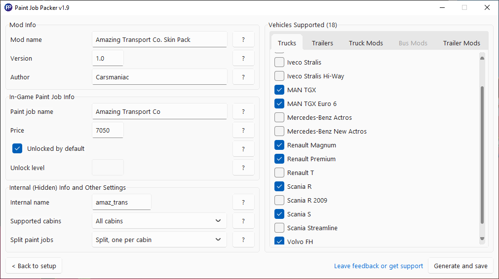

Paint Job Packer
A lightweight paint job mod making tool for ATS and ETS 2
Features
- Cross-platform support
- Support for player-owned trailers, including those from DLCs
- Support for trucks using the newer accessory-based paint job system, like the Scania S and MAN TGX Euro 6
- Support for as many vehicles as you like in a single mod
- Built-in support for >100 truck and trailer mods, full list here
- Support for separate paint jobs for each cabin of a truck, in case a single texture doesn't work for all of them
- Optionally includes readymade 4k templates for each vehicle, which can be downloaded separately here (ETS 2) and here (ATS)
See the thread on the SCS Forums for more details, and to leave feedback or get support
Download
Latest version: 1.9.2 (released 2022-06-06)
Full changelog on GitHub
Windows with included templates (.exe installer, 541.8 MB)
- Alternate download with 4k placeholder templates included
macOS (.app, 11.0 MB)
- Tested on macOS Big Sur and Monterey
- Tested on Intel, should work on Apple Silicon too
Linux (deb package, 13.0 MB)
- Tested on Ubuntu (Debian), Manjuro (Arch) and Fedora (Red Hat)
- Tested with GNOME, XFCE and KDE desktop environments
Paint Job Packer is open source, its source code is available on GitHub
Support Paint Job Packer
If you enjoy Paint Job Packer and you would like to support its development, you can leave me a tip at Ko-fi
Using Paint Job Packer
There's a full video guide to using Paint Job Packer available on YouTube.
Paint Job Packer doesn't make completed mods from the get-go. Instead it makes what I call "custom example mods", giving you all the files you need for your mod, but with placeholders standing in for every image/texture. You then go through and replace all the placeholder images with your own to complete the mod. Since you usually have to test and tweak a paint job many times before it's ready, generating paint jobs this way means you only have to run the program once.
Image editor requirements
Paint Job Packer requires an image editor that can save DDS files. DDS is a special image format used to save textures for many games, including both trucksim games. You can use any of the following:
- Photoshop with its DDS plugin
- GIMP
- Paint.NET
- Or you could use any program you like and convert your images to DDS using DXTBmp
1. Generate base files using Paint Job Packer
- Make a single paint job for a single vehicle, or a pack with support for multiple vehicles
- Support each truck's biggest cabin only or all of them, with a single paint job per vehicle or separate ones for each cabin
- Optionally use 4k/2k templates as placeholder files (if installed)
2. Replace mod manager files
- Mod_Manager_Description.txt and Mod_Manager_Image.jpg
- The description already contains a pre-generated list of vehicles supported by your mod
- The image must be a 276 x 162 JPEG
3. Replace icon
- material/ui/accessory/<paint job>_icon.dds
- Must be a 256 x 64 DDS
- If you want your icon to match the vanilla paint jobs, use the placeholder image as a guide for size & shape
4. Replace vehicle textures
- vehicle/truck/upgrade/paintjob/<paint job>/<vehicle> and/or vehicle/trailer_owned/upgrade/paintjob/<paint job>/<vehicle>
- These are the main files of your mod, which determine what your paint job will actually look like in-game
- Save each DDS in DXT5 format with mipmaps, if possible
- Ensure every file's height and width is a power of 2 (e.g. 16, 64, 2048, 4096 etc)
- You can download template packs here (ETS 2) and here (ATS)